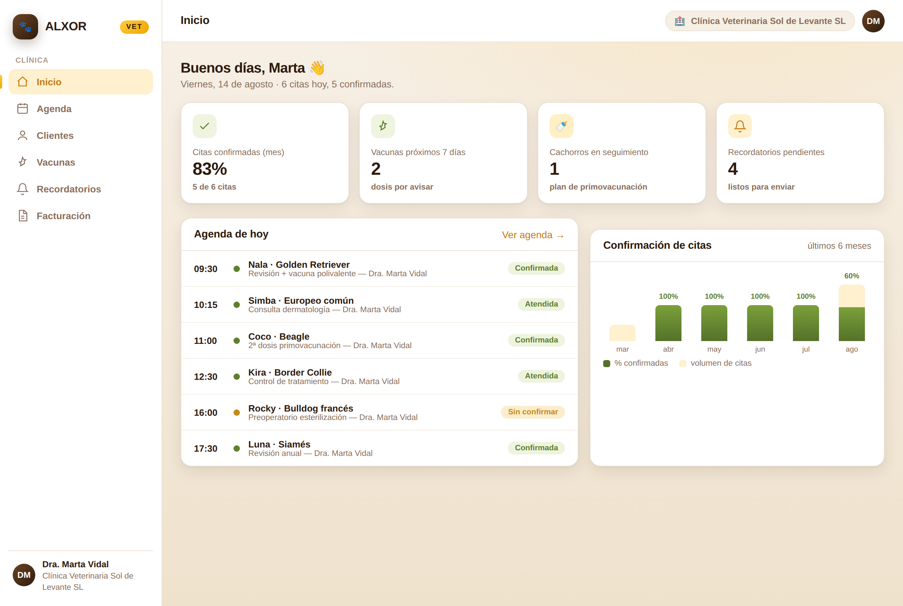
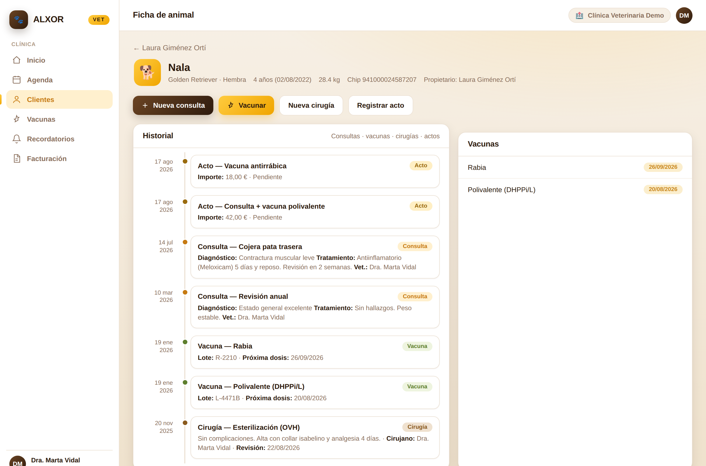

Este documento recoge, punto por punto, lo que solicitaste y cómo se ha implementado, para que puedas revisarlo y dar tu conformidad. Cada requisito indica dónde comprobarlo en la aplicación. Al final encontrarás el apartado de validación para firmar.
| Solicitado | Cómo se ha implementado | Estado | Dónde verlo | |
|---|---|---|---|---|
| Sin control de gastos en primera fase | La aplicación se centra en clientes, clínica, avisos y facturación. No incluye módulo de gastos. | ✔ Cumplido | Menú lateral | |
| Clientes con varios animales | Cada cliente tiene una ficha con todos sus animales; cada animal, su propia ficha e historial. | ✔ Entregado | Clientes → ficha | |
| Consultas con fecha, diagnóstico y tratamiento | Registro de consultas con esos campos, en el historial de cada animal, en línea de tiempo. | ✔ Entregado | Ficha de animal → Historial | |
| Vacunas con campo maestro por especie | Cuadro de pautas vacunales por especie; al vacunar, la próxima dosis y su aviso se calculan solos. | ✔ Entregado | Vacunas | |
| Cirugías | Registro de cirugías (procedimiento, cirujano, complicaciones y próxima revisión) en el historial. | ✔ Entregado | Ficha de animal → Historial | |
| Recordatorios de tratamientos y revisiones | Se generan avisos de lo que vence (vacunas, revisiones y tratamientos) y se gestionan en un panel. | ✔ Entregado | Recordatorios | |
| Variable "cachorro" | Se calcula sola por la edad y la especie del animal (no hay que marcarla a mano); guía el plan de vacunación. | ✔ Entregado | Ficha de animal (distintivo) | |
| Recordatorios de vacuna + correos al cliente | Los avisos de vacuna se envían por correo al dueño, de uno en uno o todos los pendientes a la vez. | ✔ Entregado | Recordatorios → Enviar | |
| Facturar con VeriFactu sin facturar siempre | Cada acto se registra siempre; facturar es aparte y opcional (factura VeriFactu correlativa) o se cobra con ticket. | ✔ Entregado | Facturación | |
| KPIs de citas confirmadas | Panel con el % de citas confirmadas del mes y su evolución mensual, calculado desde la agenda. | ✔ Entregado | Inicio (panel) | |
| Programa intuitivo | Interfaz limpia y moderna, pocos clics, mismo estilo que ALXOR, pensada para el día a día de la clínica. | ✔ Entregado | Toda la aplicación |
Capturas de la aplicación funcionando con datos de demostración. No son maquetas.


Marca la opción que corresponda:
Observaciones: